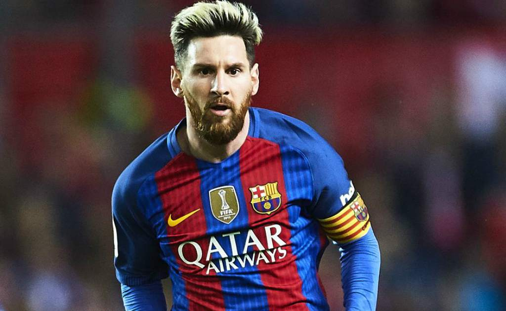
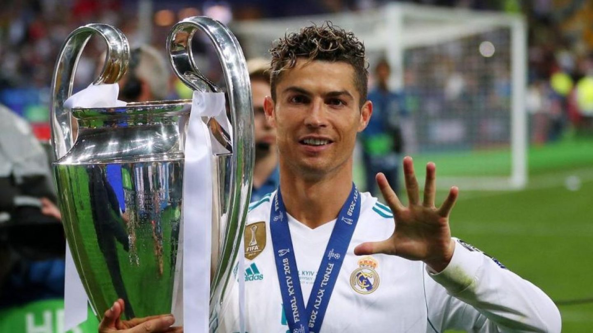
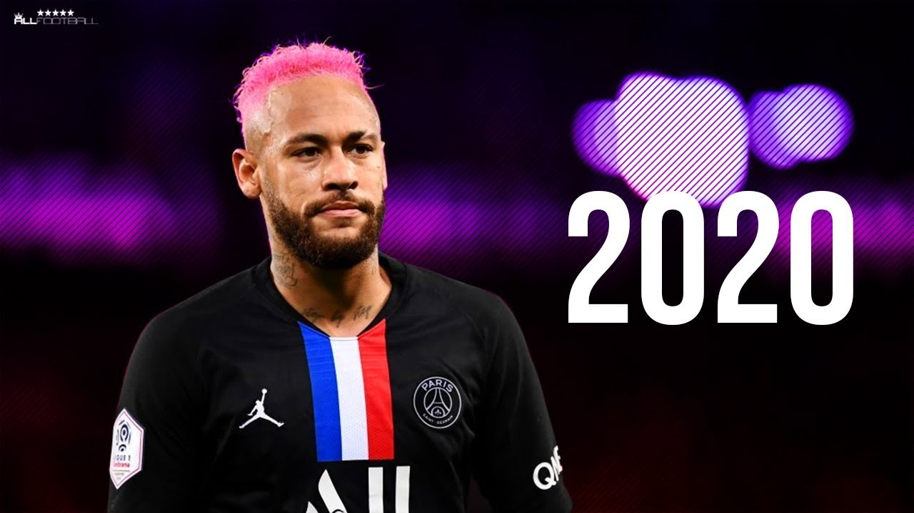

MEJORES JUGADORES DE LA FIFA
- Lionel Messi
(Lionel Andrés Messi; Rosario, Santa Fe, 1987) Futbolista argentino. Poseedor de una habilidad técnica excepcional, una endiablada velocidad y una inventiva inagotable, desde que llegó de la mano de sus padres al F.C. Barcelona, con 13 años de edad, realizó una carrera vertiginosa por las diferentes categorías hasta el primer equipo, en el que debutó con apenas 16 años en un partido amistoso ante el Oporto. En 2004, con 17 años, Leo Messi jugó su primer encuentro oficial de la Liga española. Con 18 años le llegó su consagración internacional: formó parte de la selección argentina, campeona en el Mundial Juvenil Sub-20 de Holanda, disputado en 2005.

- Cristiano Ronaldo
Cristiano Ronaldo Dos Santos Aveiro, es un futbolista portugués que juega como delantero y es considerado como uno de los mejores delanteros del mundo del fútbol. Nació en Funchal, Madeira el 5 de febrero de 1985 y es hijo de María Dolores dos Santos Aveiro y José Dinis Aveiro. Desde niño siempre mostró su buen desempeño en el fútbol y se destacó por su habilidad con la pelota.
Sus inicios se dieron a la edad de 8 años cuando ingresó a la escuela de fútbol La Andorinha y donde rápidamente empezó a sobresalir por encima de los compañeros de su edad. Tanta era la calidad que mostraba Cristiano, que a la edad de 10 años los clubes C. S. Marítimo y C. D. Nacional mostraron interés de contar con el joven jugador. Después de que se llegó a un acuerdo, el jugador fichó por C. D. Nacional, donde siguió con su formación como futbolista y se convirtió en una de la promesa más grande del fútbol portugués.

- Neymar Jr
Neymar da Silva Santos Júnior, conocido popularmente en el mundo como Neymar Jr., es un futbolista brasileño que nació en Mogi das Cruzes, estado de São Paulo el 5 de febrero de 1992 y juega como extremo o segundo delantero. Es hijo de Nadine su madre y Neymar Santos quien es su padre, del cual heredo su nombre y pasión por el fútbol ya que en el pasado también fue futbolista. Desde muy pequeño Neymar mostró su amor por el fútbol sala y fútbol callejero y fue en estos deportes que empezó a mostrar todo su talento futbolístico.
